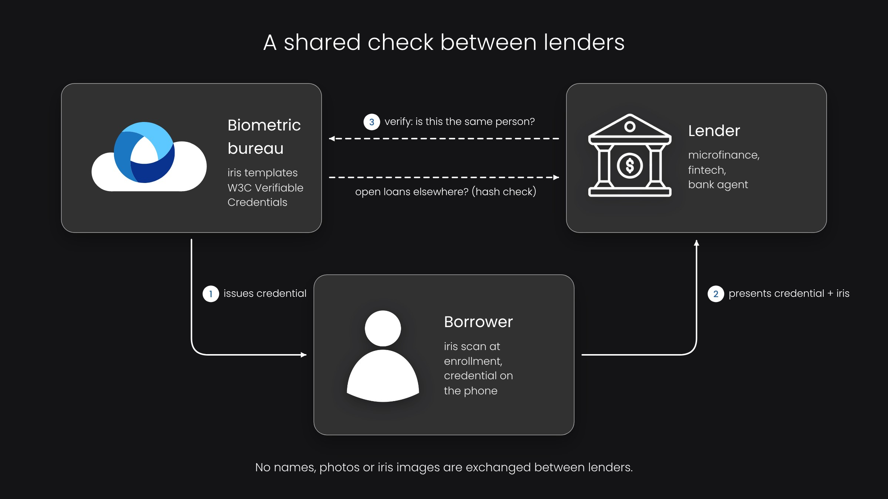

Biometric Credit Bureau: Credit History for People Without Documents
Consider a farmer in Malawi or a market trader in Nigeria who wants a small loan. A lender needs two things: to know who this person is, and to know how they repaid before. In many countries neither is available. The documents can be forged or absent, and there is no credit bureau that covers people outside the banking system. A biometric credit bureau solves both problems with one identifier that a person cannot lose, sell or change.
Why a document-based credit history does not work
A credit bureau links loans to a person through an identifier, usually a national ID number. This works where every adult has one reliable ID. According to the World Bank, around 850 million people have no official proof of identity, and 1.3 billion adults still have no account at a financial institution. In such markets a borrower who defaulted can simply come back under another name, and an honest borrower cannot prove a good repayment history to a new lender.
On top of that, lenders lose money even with existing customers. Without a reliable identifier, the same person can borrow from several microfinance institutions at once, and none of them sees the total debt.
What changes when the identifier is biometric
The best evidence comes from a field experiment in Malawi. Researchers Xavier Giné, Jessica Goldberg and Dean Yang worked with the Malawi Rural Finance Corporation and 3,206 paprika farmers who applied for input loans in 2007–2008. In randomly chosen farmer clubs, every applicant had a fingerprint taken at application, so they knew they could not borrow again under another name after a default.
For the farmers with the highest risk of default, the share of the loan repaid two months after the due date grew from 67% to 92%. Fingerprinting did not reduce the number of people who took loans, and the researchers estimated the benefit for the lender at 2.34 times the cost. For low-risk borrowers nothing changed, which is exactly what one would expect: honest people repay anyway, and the identification only matters for those who planned not to.
The same logic works at national scale. Nigeria's Bank Verification Number links every bank customer to fingerprints and a face image. According to NIBSS, 67.8 million people were enrolled by the end of 2025, and the industry fraud watchlist held 13,117 BVNs. This way a person flagged at one bank cannot simply open a clean account at another.

How a biometric credit bureau works
There are three parties: the borrower, the lender and the bureau.
- Enrollment. The borrower's iris is scanned at an agent or a branch. The bureau checks that this person is not registered yet and issues a credential bound to the biometric template.
- Verification. When the borrower applies for a loan, the lender scans the iris again and the bureau confirms that this is the same person. The borrower does not need any document for it.
- Credit check. The lender asks whether the person has open loans and how previous loans were repaid. The bureau answers this question, and lenders do not exchange names, photos or iris images with each other.
We built this model in INGRESS, a project funded by the EU's NGI ONTOCHAIN program, with a biometric bureau that issues verifiable credentials and a credit bureau that anchors every loan on a public blockchain. The architecture is described in a separate article, so here I only note the main point: a bureau like this can be shared by competing lenders, because none of them has to trust the others with personal data.
Why iris and not fingerprint
The Malawi study used fingerprints, and they worked. Still, farmers, construction workers and market traders often have worn fingerprints, which leads to failed captures exactly in the population that needs credit most. Iris does not wear out, it is contactless, and it separates people much better in large databases. This is important for a bureau, where every new enrollment is compared with everyone enrolled before. A monocular USB iris scanner costs a few hundred dollars and connects to a laptop or an Android phone, so it fits the budget of an agent network.
What it takes to start
A bureau does not have to start at national scale. One lender with a network of agents can enroll its own borrowers and run de-duplication on its portfolio. When a second lender joins, the shared check starts to pay off for both of them. The technical parts already exist: the open-source Iriscan Biometric SDK for capture and matching, the Edge service for offline agents, and the Cloud Iris API or an on-premises deployment for the bureau itself.
Sources: J-PAL, Borrower Responses to Fingerprinting for Loan Enforcement in Malawi; World Bank, Global Findex 2025; World Bank, 850 million people globally don't have ID; Nairametrics, BVN fraud watchlist 2025.